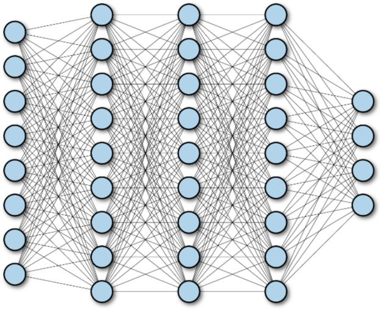
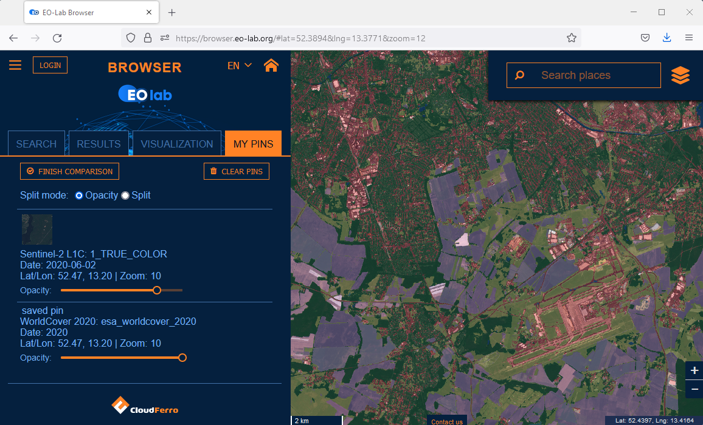

Deep Learning for EO data processing on the EO Cloud with TensorFlow
Vanessa Streifeneder 1, Florian Albrecht 2, Stefan Lang 1
1 Dept. of Geoinformatics | University of Salzburg 2 Spatial Services Ltd.
Content
- Preface
- Introduction to deep learning (DL) for Earth observation (EO)
- Convolutional neural networks (CNN)
- Application example with TensorFlow
- Summary
- The course material has been optimized for the following setup:
- The course participants have their own cloud resources on EO-Lab.
- The course participants have set up a virtual machine (VM) with GPU support on the platform for access via remote control.
- The VM has a programming environment installed that enables scripting and running of code with Jupyter notebooks.
- For setting up your EO-Lab resources accordingly, information is available here:
- FAQs in the EO-Lab help, accessible at EO-Lab Help
- The EO-Lab documentation, accessible at EO-Lab Knowledge Base
- This course focuses on scripting for Deep Learning.
- Open the course material and your VM with the programming environment in two separate windows next to each other.
- Objective
- Classifying land cover in satellite imagery using CNNs
- The DL approach applies
- Supervised learning - requires training data as input
- Machine learning - after training of algorithm follows prediction by algorithm
- Type of classification task for land cover mapping - Semantic segmentation
- Constructing feature maps
- Convolution (with filters & kernels) and pooling are applied to the input image to create the feature maps of a multi-layer CNN
- Fully connected convolutional network (FCN)
- All nodes of the lower layer are connected to all nodes of the upper layer
- 'Deep' networks (that stack multiple layers and FCNs) are suitable to learn complex functions such as the modelling of semantic segmentation.
- The U-Net model in the figure to the right combines an encoder with a decoder.
- Encoder - Contracting analysis path (left)
- Encodes feature representation at multiple scales (i.e. identifies the semantic classes that are present in the input image)
- Decoder - Expansive synthesis path (right)
- Projects the feature representation learned by the encoder to the original pixel space
- Ends with assigning a semantic class to each pixel
- Opportunity on EO-Lab
- Sentinel-2 archive available
- ESA World Cover available
- Test case for this course
- Use ESA World Cover to train a DL model
- Apply trained model to Sentinel-2 image for each year from 2015 until 2022
- Analyse time series of derived land cover maps
- Use EO-Browser to identify EO datasets
- Go to an area of interest (AOI), e.g. east of Berlin
- Identify cloudfree Sentinel-2 images representative of each year and copy dataset paths
- Go to your VM on EO-Lab to search files in repositories
- The paths to the repositories can be looked up in the EO-Lab Portfolio
- Locate the S-2 image files in the path /eodata/Sentinel-2/MSI/L1C
- Locate the ESA WorldCover dataset in the path /codede/auxdata/esa-worldcover-2020
- Store local copies for image subsets
- Use AOI to extract subsets from S-2 images and from ESA World Cover
- Store the datasets on your VM for further processing
- Import the image and label raster of the evaluation dataset in the same way as the sample data
- Load the model
- Then evaluate the model as followed
- Save the created prediction map as .tif:
- The quality of the prediction map can be further analysed in a GIS program or in python
- In case the model performance is not satisfying, several steps can be taken:
- More training samples
- Adapting model parameters
- Adapting the model architecture
- For analysing change of land cover, the presented model can be extended to classify the land cover in satellite images from dates before and after.
- The TensorFlow script of this application example can be accessed on Github.
- In this course you learned:
- What type of classifications can be addressed with Deep Learning
- What kind of DL model s are suitable for semantic segmentation
- Which steps on your Vitual Machine on EO-Lab are necessary to prepare EO data for analysis with a DL model
- Which processing components to include in a TensorFlow script for perfoming semantic segmentation with a U-Net model
Sentinel-2, Salzburg, Austria, on 18 May 2022
Preface
The EO-Lab context
How to arrange your work environment
Sentinel-2, Salzburg, Austria, on 18 May 2022
Introduction to AI for EO
Deep learning (DL) for classification of Earth observation (EO) data
Supervised learning
Supervised machine learning

Classification tasks for Deep Learning
Image classification/ recognition
Object detection
Semantic segmentation
Instance segmentation
images are recognized according to scene content
objects located in image matrix
image is segmented by assigning class probabilities to each pixel
individual objects delineated
Examples of image recognition tasks (Hoeser and Kuenzer, 2010)
The Deep Learning workflow
→
Prepare input data
→
Prepare DL model
→
Run the model
→
Evaluation
→
Further use
→
The Deep Learning workflow

Sentinel-2, Salzburg, Austria, on 18 May 2022
Go to Quiz #1
Convolutional Neural Network architecture
The CNN architecture
Stepwise reduction of the size of feature maps in a CNN

Multi-layer deep fully connected network
U-Net model for semantic segmentation
U-Net model architecture

Sentinel-2, Salzburg, Austria, on 18 May 2022
Go to Quiz #2
Application example with TensorFlow
Application context
Comparing Sentinel-2 and ESA WorldCover
Prepare data on Virtual Machine on EO-Lab
Program setups
Preparing Sample Data

Preparing Sample Data
Preparing Deep Learning model

Model Evaluation

Further Use
Reconstruct out of the predicted image patches a whole image again
Further Use
Code
Sentinel-2, Salzburg, Austria, on 18 May 2022
Go to Quiz #3
Summary
Summary
Object-based Image Analysis (OBIA)
An introductory course
Stefan LANG & Dirk TIEDE
[1] Why spatial image analysis? | [2] Regions and image objects | [3] Image segmentation | [4] Knowledge
representation | [5] Class modelling
University of Salzburg, Department of Geoinformatics, 2010-2022